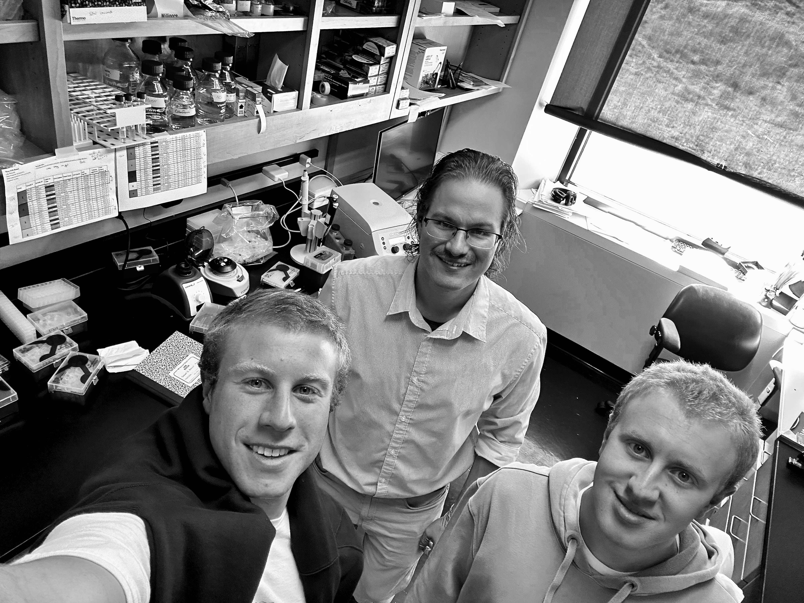

Expert advisory for early-stage life sciences: fundraising, clinical strategy, and investment insight to accelerate your venture.

Develop strategic roadmaps that align scientific milestones with funding requirements. I help prioritize experiments, clinical endpoints, and regulatory checkpoints that matter most to investors while maintaining scientific integrity.
Comprehensive technical assessment of therapeutic platforms, IP portfolios, and competitive landscapes. Translate complex science into clear risk/opportunity frameworks that resonate with both scientific advisors and investment committees.
Craft compelling investment narratives that highlight your scientific differentiation. From pitch deck optimization to valuation strategy, I help founders articulate why their science matters and how it translates to returns.
Strategic counsel on IND-enabling studies, clinical trial design, and regulatory pathways. Leverage my network of KOLs and experience evaluating Phase I-II programs to de-risk your development strategy.
Selective introductions to relevant VCs, family offices, and strategic investors in my network. Focus on investors with genuine interest in longevity, genetic medicine, and platform technologies - not spray and pray.
Serve as scientific advisor or board observer, providing continuous strategic input on pipeline decisions, partnership opportunities, and technical challenges. Bridge the communication gap between scientific teams and business leadership.
Find quick answers to common questions about our strategic advisory and fundraising services for life sciences and biotech startups.
I work with early-stage life sciences and biotech startups, especially those focused on longevity, genetic medicine, and platform technologies. My clients range from pre-seed to Series A and often include founders transitioning from academia.
I help refine your pitch deck, develop a compelling investment narrative, and provide introductions to relevant investors. My guidance covers valuation, term sheets, and overall fundraising strategy.
I h PhD-level scientific expertise with active venture investment experience, having led or co-led $25M+ in investments across o biotech companies.Iboth technical and financial insight.
Yes, I provide scientific due diligence for investors and strategic partners, evaluating assets from pre-clinical through Phase II. My process ensures a thorough review of both science and business potential.
I operate on a fixed monthly retainer, ensuring regulatory compliance while providing ongoing support. This model allows me to deliver consistent, high-value guidance throughout your fundraising and development process.
My dual expertise in science and investment, combined with a bi-coastal network, allows me to bridge the gap between innovation and capital. I offer tailored support for both founders and investors in the longevity and biotech sectors.